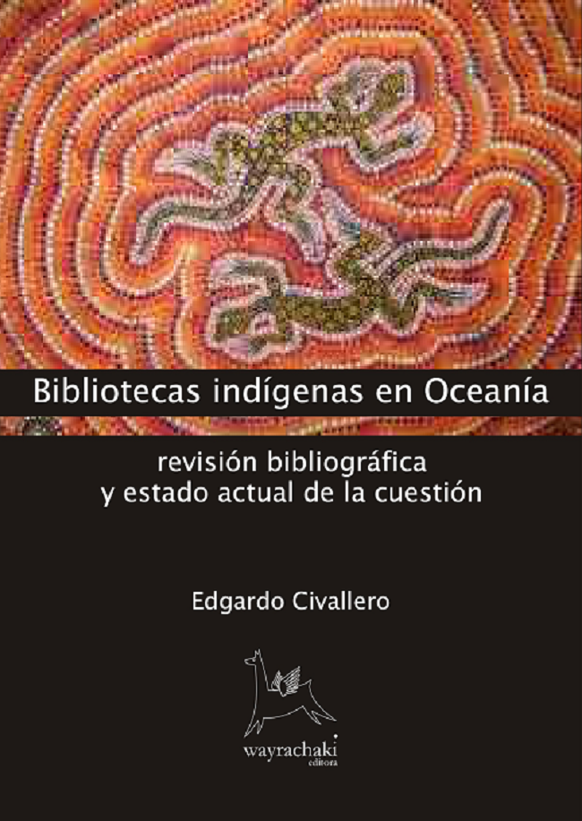

Libros digitales | Bibliotecas indígenas
Inicio > Publicaciones > Libros digitales | Bibliotecas indígenas
Mi trabajo con pueblos indígenas latinoamericanos y su relación (potencial y real) con las bibliotecas y otros espacios de conocimiento y memoria comenzó muy temprano en mi carrera, y lo hizo con trabajo de campo. Mis primeras actividades tuvieron lugar en la región del Chaco, al noreste de Argentina, con el pueblo Qom y sus vecinos Moqoit, Wichi y Pi'laxá. Más tarde colaboré en muchos otros proyectos, dicté conferencias y cursos, publiqué una tesis, un montón de artículos, varios blogs y plataformas, y cuatro libros digitales sobre el tema, y terminé dándome cuenta de que mi perspectiva (y la de aquellos que habían trabajado como yo) era absolutamente colonialista. Tardé varios años en corregir mi rumbo, y para entonces ya las propias comunidades indígenas se habían hecho cargo de sus saberes y sus memorias.
En la actualidad continúo investigando y pensando la idea de "bibliotecas, archivos y museos" en el contexto de los pueblos originarios de América Latina. Mi trabajo aborda las herramientas de clasificación y los lenguajes documentales, la producción editorial de saberes y lenguas indígenas en la región, el colonialismo implícito en la idea de "biblioteca", las políticas públicas al respecto, los muchos estereotipos aún vigentes, y un largo etcétera.
En esta sección comparto, de forma libre, los cuatro libros mencionados arriba. Si bien fueron editados hace ya tiempo (a través de mi sello Wayrachaki Editora), aún contienen elementos valiosos en sus páginas.
Todos los contenidos están protegidos por derechos de autor y se distribuyen a través de una licencia Creative Commons (ver copyright y disclaimer).

Bibliotecas indígenas en América Latina.
Revisión bibliográfica y estado actual de la cuestión
Córdoba (Argentina): Wayrachaki Editora, 2008.
A través de experiencias, protocolos, estrategias y bibliografía (especialmente accesos web), este libro permite echar un vistazo a la realidad de las bibliotecas destinadas a las poblaciones originarias de América Latina.
[Descarga].

Bibliotecas indígenas en Oceanía.
Revisión bibliográfica y estado actual de la cuestión
Córdoba (Argentina): Wayrachaki Editora, 2008.
A través de experiencias, protocolos, estrategias y bibliografía (especialmente accesos web), este libro permite echar un vistazo a la realidad de las bibliotecas destinadas a las poblaciones originarias de las islas de Oceanía, las cuales poseen algunos de los estándares más avanzados en esta categoría de unidades de información.
[Descarga].

Bibliotecas en comunidades indígenas.
Guía de acción y reflexión
Córdoba (Argentina): Wayrachaki Editora, 2007.
El título de este trabajo refleja su contenido en forma única: una verdadera guía para la acción y la reflexión, ambas relacionadas con los servicios bibliotecarios para comunidades indígenas. El libro ofrece orientación sobre definiciones y conceptos, métodos de trabajo, servicios y actividades y experiencias ya implementadas en el contexto latinoamericano.
[Descarga].

Bibliotecas indígenas.
Revisión bibliográfica y estado actual de la cuestión a nivel internacional
Córdoba (Argentina): Wayrachaki Editora, 2007.
Los servicios bibliotecarios para comunidades indígenas son actividades que se han venido desarrollando con especial énfasis en las dos últimas décadas, en aquellos espacios geográficos (América, Oceanía, Escandinavia) en los cuáles la presencia de poblaciones originarias es más fuerte. Estructurado en cuatro partes (Oceanía, América Latina, América del Norte y Escandinavia), el trabajo ofrece una síntesis relevante de los documentos publicados en relación a la materia, y de las propuestas implementadas. La información ha sido estructurada y presentada de forma que constituye, en sí misma y como su título indica, un estado actual de la cuestión a nivel internacional. Y las ilustraciones (obras de los fotógrafos Daniel Michuit y Phil Borges) proporcionan un marco gráfico único. Se trata del primer texto sobre tal materia escrito en castellano por un solo autor, y probablemente se convierta es una guía de referencia y de consulta necesaria para futuros trabajos y publicaciones.
[Descarga].